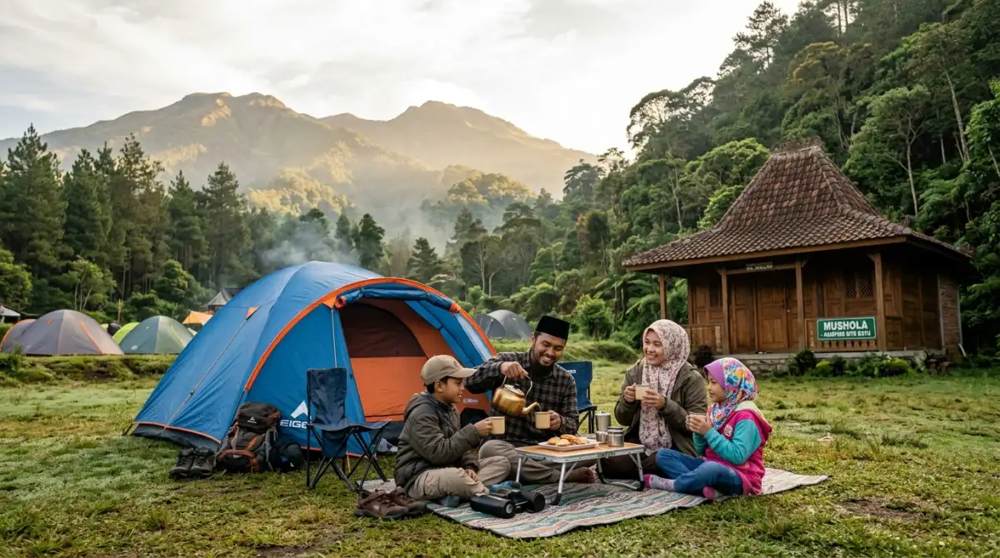
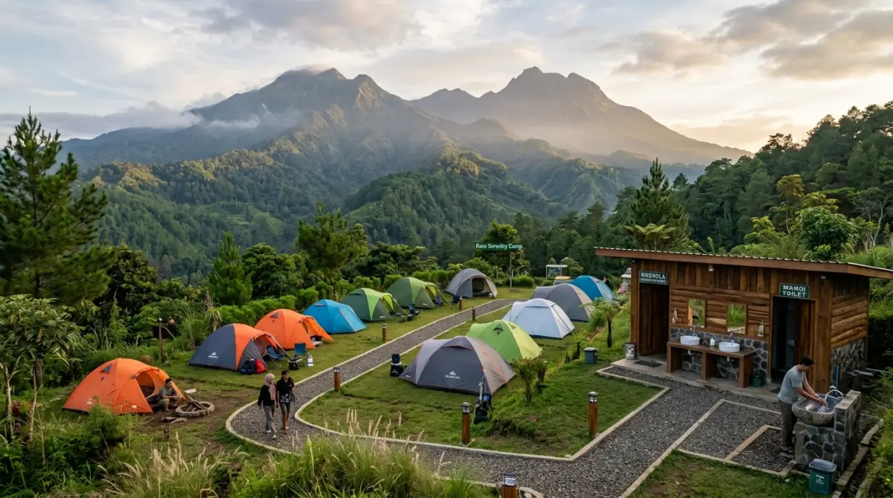

Fasilitas ibadah yang memadai sangat penting demi kenyamanan camping.Pernah nggak sih kamu merasa kepala udah mau meledak gara-gara revisian kerjaan yang nggak kelar-kelar, atau deadline yang terus ngejar kayak debt collector? Pas udah dapet approval cuti dari bos, maunya pasti kabur ke alam, nyari udara dingin Kota Batu buat healing. Tapi, sering kejadian kan, pas lagi asyik-asyiknya gelar tenda, eh bingung pas masuk waktu shalat.
Mau wudhu airnya susah, nyari tempat sujud yang bersih juga PR banget. Jangan sampai deh momen liburan yang niatnya buat refreshing malah bikin kamu menyesal di kemudian hari karena kewajiban ibadah jadi bolong-bolong. Apalagi kalau kamu berangkat bareng rombongan keluarga besar.
Makanya, mending kamu siapkan semuanya dari sekarang. Mencari tempat camping ada mushola di Batu itu sebenarnya gampang-gampang susah. Biar liburanmu tenang lahir batin tanpa penyesalan, aku udah rangkum beberapa spot kemah yang fasilitas ibadahnya juara. Yuk, simak!
Kenapa Fasilitas Ibadah Penting Saat Camping?
Coba bayangkan ini: kamu lagi kerja di kantor, tiba-tiba ada meeting dadakan jam 12 siang sampai jam 3 sore. Pasti gelisah kan mikirin shalat Dzuhur yang tertunda? Nah, perasaan gelisah itu juga bisa muncul pas kita lagi di alam bebas. Bedanya, di kantor kita tahu di mana letak mushola dan keran wudhu. Di tengah hutan pinus atau lereng gunung? Belum tentu.
Mencari arah kiblat di tengah pepohonan kadang lebih membingungkan daripada menebak mood atasan di hari Senin. Belum lagi urusan air. Air di Kota Batu itu dinginnya bisa bikin tulang ngilu, apalagi kalau kamu camping di musim kemarau pas angin lagi kencang-kencangnya. Kalau fasilitas wudhunya seadanya, becek, dan nggak terawat, niat mau ibadah malah jadi ajang uji nyali menahan dingin dan kotor.
Berdasarkan pengalaman pribadiku dan cerita teman-teman komunitas yang rutin nge-camp setiap bulan, punya tempat kemah yang Muslim-friendly itu ibarat dapat jackpot. Liburan tetap jalan, jiwa tenang, dan yang pasti anak-anak juga bisa diajarkan bahwa ibadah itu nggak boleh putus meski lagi main di alam. Kriteria "layak" di sini bukan berarti harus semegah masjid di tengah kota, ya.
Cukup ada bangunan tertutup yang melindungi dari angin, karpet yang nggak lembab, dan aliran air bersih yang jelas rutenya supaya sehabis wudhu kaki nggak kena tanah becek lagi.
Rekomendasi Tempat Camping Ada Mushola di Batu
Setelah survei ke berbagai lokasi dan membandingkan fasilitasnya, aku merangkum beberapa tempat yang nggak cuma menang di pemandangan, tapi juga sangat memanusiakan kita yang ingin beribadah dengan nyaman.
1. Batu Sunrise Camp: Fasilitas Lengkap & Bebas Ribet
Kalau kamu tipe pekerja kantoran yang maunya serba praktis karena udah terlalu capek mikirin strategi bisnis di weekdays, Batu Sunrise Camp ini jawabannya. Lokasinya sangat strategis di kawasan Batu, menawarkan pemandangan matahari terbit yang magis banget.
Yang bikin aku jatuh hati sama tempat ini adalah tata letak fasilitas umumnya. Mereka sangat paham kebutuhan keluarga dan rombongan. Area musholanya terawat, bersih, dan posisinya nggak terlalu jauh dari area camping ground utama.
Tempat wudhunya juga mengalir deras dan lantainya disemen rapi, jadi kamu nggak perlu khawatir selop atau sendalmu jeblos ke lumpur. Suasana di sini sangat kids-friendly, cocok banget buat kamu yang mau mengenalkan alam ke anak-anak tanpa harus mengorbankan kenyamanan spiritual.

Mushola dengan fasilitas wudhu yang layak memberikan kenyamanan dalam beribadah saat camping.2. Apache Camp (Coban Talun): Suasana Hutan Pinus Syahdu
Coban Talun memang udah jadi legenda buat anak-anak Malang dan Batu. Di dalam kawasannya, ada area Apache Camp yang menawarkan sensasi menginap ala suku Indian, tapi kamu juga bisa buka tenda biasa di sekitar camping ground-nya.
Karena ini kawasan wisata yang dikelola dengan cukup matang, fasilitas umumnya sangat memadai. Mushola di kawasan Coban Talun ukurannya lumayan besar untuk ukuran camping ground. Kamu bisa shalat berjamaah bareng teman-teman sekantor atau keluarga di sini.
Cuma, saranku tetap bawa jaket tebal saat jalan ke mushola di waktu Subuh, karena angin yang lewat sela-sela pohon pinus itu rasanya kayak AC ruang server kantor yang disetel 16 derajat.
3. Taman Pinus Campervan Park: Praktis Bawa Kendaraan
Tren campervan atau motocamping sekarang lagi naik daun banget. Buat kamu yang malas packing dan unpacking barang (mirip kalau lagi malas beresin file di laptop), konsep kemah di sebelah mobil ini solusinya. Taman Pinus Campervan Park di kawasan Batu memberikan fasilitas itu.
Nah, karena konsepnya park atau taman yang tertata, pengelolanya sudah menyiapkan bangunan mushola kayu yang sangat estetik dan bersih. Air wudhunya jernih khas pegunungan. Enaknya di sini, karena kendaraan ada di sebelah tenda, kamu bisa dengan mudah mengambil perlengkapan shalat ekstra dari mobil tanpa harus bongkar tas gunung yang ribet.
4. Campground Coban Rais: Lanskap Alam Terbuka
Coban Rais belakangan ini terkenal banget sama spot-spot fotonya. Tapi buat para pencinta kemah klasik, area bawahnya masih menyajikan camping ground yang asri dengan gemericik sungai kecil. Pengelola wana wisata ini paham betul bahwa mayoritas pengunjungnya butuh tempat shalat.
Mushola di area basecamp Coban Rais sangat layak pakai. Meski kamu harus berjalan sedikit dari area tenda menuju fasilitas umum, jalurnya sudah tertata. Rasanya kayak jalan kaki dari kubikel ke pantry, bedanya ini pemandangannya hijau dan udaranya segar banget, bukan pemandangan tumpukan kertas laporan.
Tips Persiapan Kemah Ramah Muslim
Menemukan tempat camping ada mushola di Batu memang melegakan, tapi kamu tetap harus ada persiapan mandiri. Preparation is key, kata bos kalau lagi kick-off project baru. Berikut beberapa hal yang wajib kamu siapkan:
- Bawa Peralatan Shalat Pribadi (Travel Size): Walaupun mushola di tempat wisata biasanya menyediakan mukena atau sarung inventaris, bawa sendiri jauh lebih aman. Apalagi di musim liburan panjang, kadang mukena yang ada basah karena terlalu sering dipakai bergantian. Saranku, bawa sajadah travel yang tipis dan mukena parasut yang gampang dilipat. Ini nggak akan makan tempat di tas carrier kamu kok.
- Sandal Selop Anti Licin: Ini sering banget disepelekan. Pas mau wudhu, jalanan dari tenda ke keran air bisa jadi licin karena embun pagi. Jangan pakai sepatu gunung pas mau wudhu, repot lepas pasangnya. Pakai sandal selop berbahan karet yang grip-nya bagus biar kamu nggak terpeleset. Mengurus kaki keseleo di gunung itu jauh lebih rumit daripada handle komplain klien, percayalah.
- Ketahui Waktu Shalat Lokal: Di gunung atau area lembah, matahari sering tertutup bukit, jadi kita gampang kehilangan orientasi waktu. Tiba-tiba udah gelap aja. Pastikan kamu sudah mengunduh jadwal shalat khusus area Kota Batu di smartphone kamu, dan set alarm. Sinyal internet mungkin agak drop di beberapa titik kemah, jadi jadwal offline itu penting banget.
Kesimpulan
Liburan ke alam itu sejatinya adalah momen untuk men-charge kembali energi kita yang habis diperas oleh rutinitas pekerjaan sehari-hari. Kita mencari ketenangan, udara bersih, dan waktu berkualitas bareng orang-orang terdekat. Jangan sampai, kepuasan liburanmu berkurang cuma karena kamu terus kepikiran shalat yang terlewat akibat salah memilih lokasi.
Waktu nggak bisa diputar ulang. Menyesal setelah kembali ke meja kantor karena merasa liburannya "kurang berkah" itu nggak enak banget rasanya. Dengan memilih tempat camping ada mushola di Batu yang fasilitasnya terjamin, kamu bisa menikmati api unggun di malam hari, menyeruput kopi hangat di pagi hari, dan tetap menjaga komunikasi dengan Sang Pencipta dengan khusyuk.
Jadi, obrolin lagi rencana liburanmu sama keluarga atau teman-teman, dan pastikan spot yang kalian pilih benar-benar nyaman untuk semua. Selamat merencanakan liburan, ya!
FAQ